건설재료시험기사 (2017-09-23 기출문제)
1과목: 콘크리트공학
1. 숏크리트에 대한 설명으로 옳지 않은 것은?
- 거푸집이 불필요하다.
- 공법에는 건식법과 습식법이 있다.
- 평활한 마무리면을 얻을 수 있다.
- 작업시에 분진이 많이 발생한다.
(정답률: 87%)

2. 매스(mass) 콘크리트에 대한 설명으로 틀린 것은?
- 매스 콘크리트로 다루어야 하는 구조물의 부재치수는 일반적인 표준으로서 넓이가 넓은 평판구조의 경우 두께 0.8m이상으로 한다.
- 매스 콘크리트로 다루어야 하는 구조물의 부재치수는 일반적인 표준으로서 하단의 구속된 벽조의 경우 두께 0.3m이상으로 한다.
- 콘크리트를 타설한 후에 침하의 발생이 우려되는 경우에는 재진동 다짐 등을 실시하여야한다.
- 수축이음을 설치할 경우 계획된 위치에서 균열 발생을 확실히 유도하기 위해서 수축이음의 단면 감소율을 35%이상으로 하여야 한다.
(정답률: 66%)
3. 콘크리트의 양생에 대한 설명으로 틀린 것은?
- 고로 슬래그 시멘트를 사용한 경우, 습윤양생의 기간은 보통 포틀랜드 시멘트를 사용한 경우보다 짧게 하여야 한다.
- 막양생제는 콘크리트 표면의 물빛(水光)이 없어진 직후에 살포하는 것이 좋다.
- 재령 5일이 될 때가지는 해수에 콘크리트가 씻기지 않도록 보호한다.
- 습윤양생을 실시할 경우 거푸집판이 얇든가 또는 건조의 염려가 있을 때는 살수하여 습윤상태로 유지하여야 한다.
(정답률: 73%)
4. 콘크리트의 슬럼프시험에 대한 설명으로 틀린 것은?(오류 신고가 접수된 문제입니다. 반드시 정답과 해설을 확인하시기 바랍니다.)
- 다짐봉은 지름 16m, 길이 500~600mm의 강 또는 금속제 원형봉으로 그 앞 끝을 반구 모양으로 한다.
- 슬럼프 콘에 콘크리트 시료를 거의 같은 양의 3층으로 나눠서 채운다.
- 콘크리트 시료의 각 층을 다질 때 다짐봉의 깊이는 그 앞 층에 거의 도달할 정도로 한다.
- 슬럼프는 1m단위로 표시한다.
(정답률: 72%)
5. 콘크리트 비파괴 시험방법 중 철근 부식상태를 평가할 수 있는 시험법은?
- 초음파속도법
- 전자유도법
- 전자파 레이더법
- 자연전위법
(정답률: 58%)
6. 다음 중 경량골재 콘크리트에 대한 설명으로 틀린 것은?
- 경량골재 콘크리트를 내부진동기로 다질 때 보통골재 콘크리트의 경우보다 진동기를 찔러 넣는 간격을 작게 하거나 진동시간을 약간 길게 해 충분히 다져야 한다.
- 경량골재 콘크리트의 탄성계수는 보통골재콘크리트의 40~70% 정도이다.
- 경량골재 콘크리트의 공기량은 보통골재 콘크리트의 경우보다 공기량을 1%정도 크게 해야 한다.
- 경량골재 콘크리트는 동일한 반죽질기를 갖는 보통골재 콘크리트에 비하여 슬럼프가 커지는 경량이 있다.
(정답률: 45%)
7. 콘크리트 배합 시 단위수량을 감소시킬 경우 얻는 이점이 아닌 것은?
- 압축과 휨강도를 증진시킨다.
- 철근과 다른 층의 콘크리트 간의 접착력을 증가시킨다.
- 투수율을 증가시킨다.
- 건조수축이 줄어든다.
(정답률: 54%)
8. 프리스트레스트 콘크리트에 사용하는 그라우트에 대한 설명으로 틀린 것은?
- 팽창성 그라우트의 팽창률은 0~10%를 표준으로 한다.
- 블리딩률은 5%이하를 표준으로 한다.
- 팽창성 그라우트의 재령 28일의 압축강도는 20MPa 이상을 표준으로 한다.
- 물-결합재비는 455 이하로 한다.
(정답률: 71%)
9. 다음 중 수중콘크리트 타설의 원칙에 대한 설명으로 틀린 것은?
- 콘크리트 타설에서 완전히 물막이를 할 수 없는 경우 유속은 1초간 100mm이하로 하는 것이 좋다.
- 콘크리트를 수중에 낙하시키면 재료분리가 일어나고 시멘트가 유실되므로 콘크리트는 수중에 낙하시키지 않아야 한다.
- 수중 콘크리트를 시공할 때 시멘트가 물에 씻겨서 흘러나오지 않도록 트레미나 콘크리트펌프를 사용해서 타설하여야 한다.
- 한 구획의 콘크리트 타설을 완료한 후 레이턴스를 모두 제거하고 다시 타설하여야 한다.
(정답률: 76%)
10. 콘크리트의 블리딩시험(KS F 2414)에 대한 설명으로 틀린 것은?
- 실험 중에는 실온(20±3)℃로 한다.
- 용기에 콘크리트를 채울 때 콘크리트 표면이 용기의 가장자리에서 (30±3)mm 높아지도록 고른다.
- 최초로 기록한 시각에서부터 60분 동안 10분마다 콘크리트 표면에서 스며 나온 물을 빨아낸다.
- 물을 쉽게 빨아내기 위하여 2분전에 두께 약 50mm의 블록을 용기의 한쪽 밑에 주의 깊게 괴어 용기를 기울이고, 물을 빨아낸 후 수평위치로 되돌린다.
(정답률: 78%)
11. 서중 콘크리트에 대한 설명으로 틀린 것은?
- 콘크리트를 타설할 때의 콘크리트 온도는 35℃이하이어야 한다.
- 타설을 끝낸 콘크리트에는 살수, 덮개 등의 조치를 하여 표면의 건조를 억제한다.
- 배관에 의해 유동화 콘크리트를 타설할 때, 운반 후 타설 완료까지 1시간 이내로 하여야한다.
- 일반적으로는 기온 10℃의 상승에 대하여 단위수량은 2~5% 정도 증가하는 경향이 있다.
(정답률: 68%)
12. 압축강도에 의한 콘크리트 품질관리에 대한 설명으로 틀린 것은?
- 일반적인 경우 조기재령에 있어서의 압축강도에 의해 실시한다.
- 1회의 시험값은 현장에서 채취한 시험체 3개의 압축강도 시험값의 평균값으로 한다.
- 시험값에 의하여 콘크리트의 품질을 관리할 경우에는 관리도 및 히스토그램을 사용하는 것이 좋다.
- 압축간도 시험실시의 시기 및 횟수는 1일 1회 또는 구조물의 중요도와 공사규모에 따라 500m3 마다 1회, 배합이 변경될 때마다 1회로 한다.
(정답률: 67%)
13. 거푸집 및 동바리의 구조를 계산할 때 연직하중에 대한 설명으로 틀린 것은?
- 고정하중으로서 콘크리트의 단위중량은 철근의 중량을 포함하여 보통 콘크리트인 경우 20kN/m3을 적용하여야 한다.
- 고정하중으로서 거푸집 하중은 최소 0.4kN/m3이상을 적용하여야 한다.
- 특수 거푸집이 사용된 경우에는 고정하중으로 그 실제의 중량을 적용하여 설계하여야 한다.
- 활하중은 구조물의 수평투영면적(연직방향으로 투영시킨 수평면적)당 최소 2.5kN/m2이상으로 하여야 한다.
(정답률: 60%)
14. 굳지 않은 콘크리트의 워커빌리티에 영향을 미치는 요인에 대한 설명으로 옳은 것은?
- 시멘트의 비표면적이 크면 워커빌리티가 나빠진다.
- 모양이 각진 골재를 사용하면 워커빌리티가 좋아진다.
- AE제, 플라이애쉬를 사용하면 워커빌리티가 개선된다.
- 콘크리트의 온도가 높을수록 슬럼프는 증가한다.
(정답률: 69%)
15. 아래 표와 같은 시방배합을 현장배합으로 고칠 경우 1m3의 콘크리트를 제조하기 위한 각 재료의 양을 설명한 것으로 틀린 것은? (단, 현장의 잔골재 중에서 5mm체에 남는 것은 3%, 굵은골재 중에서 5mmcp를 통과하는 것은 5%, 잔골재의 흡수율은 1.3%, 잔골재의 함수율은 3.8%, 잔골재의 함수율은 3.8%, 굵은골재는 표면건조포화상태이다.)
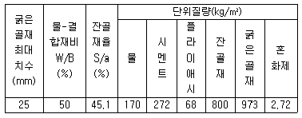
- 잔골재량은 773kg이다.
- 굵은골재량은 1000kg이다.
- 수(水)량은 151kg이다.
- 결합재량은 340kg이다.
(정답률: 48%)
16. 설계기준 압축강도가 28MPa이고, 15회의 압축강도 시험으로부터 구한 압축강도의 표준편차가 3.5MPa일 때 콘크리트의 배합강도를 구하면?
- 33MPa
- 34MPa
- 35MPa
- 36.5MPa
(정답률: 52%)
17. 일반 콘크리트의 타설 및 다지기에 관한 설명으로 옳은 것은?
- 타설한 콘크리트를 거푸집안에서 횡방향으로 원활히 이동시켜야 한다.
- 슈트, 펌프배관 등의 배출구와 타설면까지의 높이는 1.5m 이상을 원칙으로 한다.
- 깊은 보와 두꺼운 벽 등 부재가 두꺼운 경우 거푸집 진동기의 사용을 원칙으로 한다.
- 2층으로 나누어 타설할 경우 상층의 콘크리트 타설은 원칙적으로 하층의 콘크리트가 굳기 시작하기 전에 해야 한다.
(정답률: 66%)
18. 프리스트레스트 콘크리트에 대한 설명 중 틀린 것은?
- 긴장재에 긴장을 주는 시기에 따라서 포스트텐션방식과 프리텐션방식으로 분류된다.
- 프리텐션방식에 있어서 프리스트레싱할 때의 콘크리트압축강도는 20MPa이상이어야 한다.
- 프리스트레싱을 할 때의 콘크리트의 압축강도는 프리스트레스를 준 직후에 콘크리트에 일어나는 최대 압축 응력의 1.7배 이상이어야 한다.
- 그라우트 시공은 프리스트레싱이 끝나고 8시간이 경과한 다음 가능한 한 빨리 하여야한다.
(정답률: 82%)
19. 일반 콘크리트에 사용되는 재료의 계략허용오차에 대한 설명으로 틀린 것은?
- 잔골재 : ±3%
- 혼화제 : ±3%
- 혼화재 : ±3%
- 굵은 골재 : ±3%
(정답률: 72%)
20. 콘크리트의 균열은 재료, 시공, 설계 및 환경 등 여러 가지 요인에 의해 발생한다. 다음 중 재료적 요인과 가장 관련이 많은 균열현상은?
- 알칼리골재반응에 의한 거북등형상의 균열
- 온도변화, 화학작용 및 동결융해 현상에 의한 균열
- 콘크리트 피복두께 및 철근의 정착길이 부족에 의한 균열
- 재료분리, 콜드조인트(cold joint) 발생에 의한 균열
(정답률: 73%)
2과목: 건설시공 및 관리
21. 아스팔트 포장의 안정성 부족으로 인해 발생하는 대표적인 파손은 소성변형(바퀴자국, 측방유동)이다. 최근 우리나라의 도로에서 이 소성변형이 문제가 되고 있는데, 다음 중 그 원인이 아닌 것은?
- 여름철 고온 현상
- 중차량 통행
- 수막현상
- 표시된 차선을 따라 차량이 일정위치로 주행
(정답률: 74%)
22. 토공에서 성토재료에 대한 요구조건으로 틀린 것은?
- 투수성이 낮은 흙일 것
- 시공장비에 대한 트래피커빌리티의 확보가 용이할 것
- 노면의 시공이 쉽도록 압축성이 클 것
- 다져진 흙의 전단강도가 클 것
(정답률: 68%)
23. 자연 함수비 8%인 흙으로 성토하고자 한다. 다짐한 흙의 함수비를 15%로 관리하도록 규정하였을 때 매층마다 1m2당 약 몇 kg의 물을 살수해야 하는가?(단, 1층의 다짐 후 두께는 30cm이고, 토량 변화율 C=0.9이며, 원지반상태에서 흙의 단위중량은 1.8t/m3이다.)
- 27.4kg
- 34.2kg
- 38.9kg
- 46.7kg
(정답률: 42%)
24. 네크워크 공정표작성에 필요한 용어 중 아래의 표에서 설명하고 있는 것은?
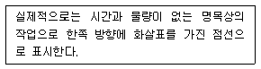
- 작업활동(activity)
- 더미(dummy)
- 이벤트(event)
- 주공정선(critical path)
(정답률: 84%)
25. 암석발파공법에서 1차발파 후에 발파된 원석의 2차발파공법으로 주로 사용되는 것이 아닌 것은?
- 프리스프리팅공법
- 블록보링공법
- 스네이크보링공법
- 머드캐핑공법
(정답률: 57%)
26. 교량 가설공법 중 압출공법(ILM)의 특징을 설명한 것으로 틀린 것은?
- 비계작업 없이 시공할 수 있으므로 계곡 등과 같은 교량 밑의 장해물에 관계없이 시공할 수 있다.
- 기하학적인 현상에 적용이 용이하므로 곡선교 및 곡선의 변화가 많은 교량의 시공에 적합하다.
- 대형 크레인 등 거치장비가 필요 없다.
- 몰드 및 추진성에 제한이 있어 상부 구조물의 횡단면과 두께가 일정해야 한다.
(정답률: 67%)
27. 다음은 어떤 공사의 품질관리에 대한 내용이다. 가장 먼저 해야 할 일은?
- 품질특성의 선정
- 작업표준의 결정
- 관리한계 설정
- 관리도의 작성
(정답률: 70%)
28. 웰 포인트(well point)공법으로 강제배수시 point와 point의 일반적인 간격으로 적당한 것은?
- 1~2m
- 3~5m
- 5~7m
- 8~10m
(정답률: 63%)
29. 아스팔트포장에서 표층에 가해지는 하중을 분산시켜 보조기층에 전달하며, 교통하중에 의한 전단에 저항하는 역할을 하는 층은?
- 차단층
- 노체
- 기층
- 노상
(정답률: 75%)
30. 15t 불도우저로 60m를 도우저 작업을 할 경우에 시간당 작업능력은? (단, 토질은 보통토, 평탄지로 작업효율 0.65, 불도우져의 전진속도 40m/min, 후진속도 100m/min, 브레이드의 정격용량 2.3m3, 토량의 변화율은 보통토로서 C=0.9, L=1.25이고 기어변속시간은 0.25분이다.)
- 28.2m3/h
- 30.5m3/h
- 43.7m3/h
- 53.1m3/h
(정답률: 60%)
31. 기초를 시공할 때 지면의 굴착 공사에 있어서 굴착면이 무너지거나 변형이 일어나지 않도록 흙막이 지보공을 설치하는데 이 지보공의 설비가 아닌 것은?
- 흙막이판
- 널 말뚝
- 띠장
- 우물통
(정답률: 77%)
32. 본바닥 토량 20000m3를 0.6m3 백호를 사용하여 굴착하고자 한다. 아래 표의 조건과 같을 때 굴착완료에 며칠이 소요되는가?
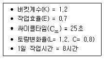
- 35일
- 38일
- 42일
- 46일
(정답률: 67%)
33. 운동장 또는 광장 등 넓은 지역의 배수는 주로 어떤 배수로 하는 것이 좋은가?
- 암거 배수
- 개수로 배수
- 지표 배수
- 맹암거 배수
(정답률: 80%)
34. 불도저의 종류 중 배토판을 좌, 우로 10~40cm정도 기울려 경사면 굴착이나 도랑파기 작업에 유리한 것은?
- U도저
- 레이크도저
- 틸트도저
- 스트레이트도저
(정답률: 72%)
35. 폭우 시 옹벽 배면에는 침투수압이 발생되는데, 이 침투수에 의한 중요 영향과 관계가 먼 것은?
- 옹벽 저면에서의 양압력 증가
- 포화에 의한 흙의 무게 증가
- 활동 면에서의 양압력 증가
- 수평저항력의 증가
(정답률: 78%)
36. RCD(reverse circulation drill)공법의 시공방법 설명 중 옳지 않은 것은?
- 물을 사용하여 약 0.2~0.3kg/cm2의 정수압으로 공벽을 안정시킨다.
- 기종에 따라 약 35°정도의 경사 말뚝 시공이 가능하다.
- 케이싱 없이 굴삭이 가능한 공법이다.
- 수압을 이용하며, 연약한 흙에 적합하다.
(정답률: 58%)
37. 시공기면을 결정할 때 고려할 사항으로 틀린 것은?
- 토공량이 최대가 되도록 하며, 절토·성토 균형을 시킬 것
- 연약지반, land slide, 낙석의 위험이 있는 지역은 가능한 피할 것
- 비탈면 등은 흙의 안정성을 고려할 것
- 암석 굴착은 적게 할 것
(정답률: 66%)
38. 아래 그림과 같이 20개의 말뚝으로 구성된 군항이 있다. 이 군항의 효율(E)을 Converse-Labarre식을 이용해서 구하면?
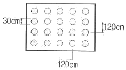
- 0.758
- 0.721
- 0.684
- 0.647
(정답률: 51%)
39. TBM(Tunnel Boring Machine)에 의한 굴착의 특징이 아닌 것은?
- 안정성(安定性)이 높다.
- 여굴에 의한 낭비가 적다.
- 노무비 절약이 가능하다.
- 복잡한 지질의 변화에 대응이 용이하다.
(정답률: 79%)
40. 25℃에서 100mL의 물에 몇 g의 Ag3AsO4가 용해될 수 있는가? (단, 25℃에서 Ag3AsO4의 Ksp=1.0×1022, Ag3AsO4의 분자량 : 462.53g/mol이다.)(오류 신고가 접수된 문제입니다. 반드시 정답과 해설을 확인하시기 바랍니다.)
- 6.42×10-4g
- 6.42×10-5g
- 4.53×10-9g
- 4.53×10-10g
(정답률: 34%)
3과목: 건설재료 및 시험
41. 강의 열처리 방법 중 담금질을 한 강에 인성을 주기 위해 변태점 이하의 적당한 온도에 서 가열한 다음 냉각시키는 방법은?
- 용융
- 뜨임
- 풀림
- 불림
(정답률: 44%)
42. Hooke의 법칙이 적용되는 인장력을 받는 부재의 늘음량(길이변형량)에 대한 설명으로 틀린 것은?
- 작용외력이 클수록 늘음량도 커진다.
- 재료의 탄성계수가 클수록 늘음량도 커진다.
- 부재의 길이가 길수록 늘음략도 커진다.
- 부재의 단면적이 작을수록 늘음략도 커진다.
(정답률: 62%)
43. 도폭선에서 심약(心藥)으로 사용되는 것은?
- 흑색화약
- 질화납
- 뇌홍
- 면화약
(정답률: 39%)
44. 토목섬유(Geosynthetics)의 기능과 관련된 용어 중 아래의 표에서 설명하는 기능은?
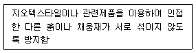
- 배수기능
- 보강기능
- 여과기능
- 분리기능
(정답률: 76%)
45. 콘크리트에 AE제를 혼입했을 때의 설명 중 옳지 않은 것은?
- 유동성이 증가한다.
- 재료의 분리를 줄일 수 있다.
- 작업하기 쉽고 블리딩이 커진다.
- 단위 수량을 줄일 수 있다.
(정답률: 61%)
46. 굵은 골재의 최대 치수란 질량비로 몇 %이상 통과시키는 체 중에서 최소 치수인 체의 호칭치수를 말하는가?
- 80
- 85
- 90
- 95
(정답률: 72%)
47. 다음 중 목재의 인공건조법이 아닌 것은?
- 수침법
- 끓임법
- 열기법
- 증기법
(정답률: 82%)
48. 다음 중에서 아스팔트의 점도에 가장 큰 영향을 주는 것은?
- 비중
- 인화점
- 연화점
- 온도
(정답률: 50%)
49. 전체 500g의 잔골재를 체분석한 결과가 아래 표와 같을 때 조립률은?
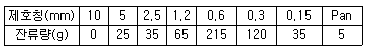
- 2.67
- 2.87
- 3.01
- 3.22
(정답률: 55%)
50. 아스팔트 배합설계 시 가장 중요하게 검토하는 안정도(stability)에 대한 정의로 옳은 것은?
- 교통하중에 의한 아스팔트 혼합물의 변형에 대한 저항성을 말한다.
- 노화작용에 대한 저항성 및 기상작용에 대한 저항성을 말한다.
- 아스팔트 혼합물의 배합 시 작 섞일 수 있는 능력을 말한다.
- 자동차의 제동(Brake) 시 적절한 마찰로서 정지할 수 있는 표면조직의 능력이다.
(정답률: 60%)
51. 다음 중 시멘트 응결시간 측정에 사용하는 기구는?
- 데발(Deval)
- 블레인(Blaine)
- 오토클레이브(Autoclave)
- 길모아침(Gillmore needle)
(정답률: 73%)
52. 역청재료의 일반적 성질에 관한 설명으로 틀린 것은?
- 역청재료는 유기질 재료가 가지지 못하는 무기질 재료 특유의 성질을 가지고 있어 포장재료, 주입재료, 방수재료 및 이음재 등에 사용된다.
- 타르(tar)는 석유원유, 석탄, 수목 등의 유기물의 건류에 의하여 얻어진 암흑색의 액상물질로서 아스팔트보다 수분이 많이 포함되어 있다.
- 역청유제는 역청을 미립자의 상태에서 수중에 분산시켜 혼탁액으로 만든 것이다.
- 골타르(coal tar)는 석탄의 건류에 의하여 얻어지는 가스 또는 코우크스를 제조할 때 생기는 부산물이다.
(정답률: 42%)
53. 포틀랜드시멘트에 혼합물질을 섞은 시멘트를 혼합시멘트라고 한다. 다음 중 혼합시멘트에 속하지 않는 것은?
- 알루미나시멘트
- 고로슬래그시멘트
- 플라이애쉬시멘트
- 포졸란시멘트
(정답률: 66%)
54. 단위용적 질량이 1.65t/m3인 굵은 골재의 절건밀도가 2.65g/cm3일 때 이 골재의 실적률 (A)과 공극률(B)은?
- A=62.3%, B=37.7%
- A=69.7%, B=30.3%
- A=66.7%, B=33.3%
- A=71.4%, B=28.6%
(정답률: 62%)
55. 석재를 모양 및 치수에 따라 분류할 경우 아래의 표에서 설명하는 석재는?
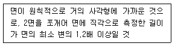
- 각석
- 판석
- 사고석
- 견치석
(정답률: 54%)
56. 콘크리트용 혼화재료인 플라이애시에 대한 다음 설명 중 틀린 것은?
- 플라이애시는 보존 중에 입자가 응집하여 고결하는 경우가 생기므로 저장에 유의하여야한다.
- 플라이애시는 인공포졸란 재료로 잠재수경성을 가지고 있다.
- 플라이애시는 워커빌리티 증가 및 단위수량 감소효과가 있다.
- 플라이애시 중의 미연탄소분에 의해 AE제 등이 흡착되어 연행공기량이 현저히 감소한다.
(정답률: 50%)
57. 다음 혼화재료 중 고강도 및 고내구성을 동시에 만족하는 콘크리트를 제조하는데 가장적합한 혼화재료는?
- 고로슬래그 미분말 1종
- 고로슬래그 미분망 2종
- 실리카퓸
- 플라이애시
(정답률: 62%)
58. 포틀랜드 시멘트의 제조에 필요한 주원료는?
- 응회암과 점토
- 석회암과 점토
- 화강암과 모래
- 점판암과 모래
(정답률: 64%)
59. 화강암의 일반적인 특징에 대한 설명으로 틀린 것은?
- 조직이 균일하고 내구성 및 강도가 크다.
- 내화성이 풍부하여 내화구조물용으로 적당하다.
- 경도 및 자중에 커서 가공 및 시공이 어렵다.
- 균열이 적기 때문에 큰 재료를 채취할 수 있다.
(정답률: 80%)
60. 골재의 함수상태에 대한 설명으로 틀린 것은?
- 절대건조상태는 1⑤±5℃의 온도에서 일정한 질량이 될 때까지 건조하여 골재 알의 내부에 포함되어 있는 자유수가 완전히 제거된 상태이다.
- 공기 중 건조상태는 골재를 실내에 방치한 경우 골재입자의 표면과 내부의 일부가 건도된 상태이다.
- 표면건조포화상태는 골재의 표면수는 없고 골재알 속의 빈틈이 물로 차있는 상태이다.
- 습윤상태는 골재입자의 표면에 물이 부착되어 있으나 골재입자 내부에는 물이 없는 상태이다.
(정답률: 67%)
4과목: 토질 및 기초
61. 샘플러(sampler)의 외경이 6cm, 내경이 5.5cm일 때, 면적비(Ar)는?
- 8.3%
- 9.0%
- 16%
- 19%
(정답률: 56%)
62. 기초록 4m인 연속기초에서 기초면에 작용하는 합력의 연직성분은 10t이고 편심거리가 0.4m일 때, 기초지반에 작용하는 최대압력은?
- 2t/m2
- 4t/m2
- 6t/m2
- 8t/m2
(정답률: 44%)
63. Sand drain공법의 지배 영역에 관한 Barron의 정사각형 배치에서 사주(Sand pile)의 간격을 d, 유효원의 지름을 de라 할 때 de를 구하는 식으로 옳은 것은?
- de = 1.13d
- de = 1.⑤d
- de = 1.03d
- de = 1.50d
(정답률: 74%)
64. 아래 그림에서 투수계수 K=4.8×103cm/sec 일 때 Darcy 유출속도(v)와 실제 물의 속도(침투속도, vs)는?
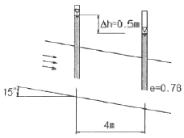
- v=3.4×10-4cm/sec, vs=5.6×10-4cm/sec
- v=3.4×10-4cm/sec, vs=9.4×10-4cm/sec
- v=5.8×10-4cm/sec, vs=10.8×10-4cm/sec
- v=5.8×10-4cm/sec, vs=13.2×10-4cm/sec
(정답률: 45%)
65. 다음 중 시료채취에 대한 설명으로 틀린 것은?
- 오거보링(Auger Boring)은 흐트러지지 않은 시료를 채취하는데 적합하다.
- 교란된 흙은 자연상태의 흙보다 전단강도가 작다.
- 액성한계 및 소성한계 시험에서는 교란시료를 사용하여도 괜찮다.
- 입도분석시험에서는 교란시료를 사용하여도 괜찮다.
(정답률: 48%)
66. 어떤 굳은 점토층을 깊이 7m가지 연직 절도하였다. 이 점토층의 일축압축강도가 1.4kg/cm2, 흙의 단위중량이 2t/m3 라 하면 파괴에 대한 안전율은? (단, 내부마찰각은 30°)
- 0.5
- 1.0
- 1.5
- 2.0
(정답률: 36%)
67. 아래 그림과 같은 지표면에 2개의 집중하중이 작용하고 있다. 3t의 집중하중 작용점 하부 2m지점 A에서의 연직하중의 증가량은 약 얼마인가? (단, 영행계수는 소수점이하 넷째자리까지 구하여 계산하시오.)
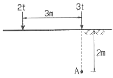
- 0.37t/m2
- 0.89t/m2
- 1.42t/m2
- 1.94t/m2
(정답률: 45%)
68. 10m 두께의 점토층이 10년 만에 90% 압밀이 된다면, 40m 두께의 동일한 점토층이 90% 압밀에 도달하는 수요되는 기간은?
- 16년
- 80년
- 160년
- 240년
(정답률: 68%)
69. 사면안정 해석방법에 대한 설명으로 틀린 것은?
- 일체법은 활동면 위에 있는 흙덩어리를 하나의 물체로 보고 해석하는 방법이다.
- 절편법은 활동면 위에 있는 흙을 몇 개의 절편으로 분할하여 해석하는 방법이다.
- 마찰원방법은 점착력과 마찰각을 동시에 갖고 있는 균질한 지반에 적용된다.
- 절편법은 흙이 균질하지 않아도 적용이 가능하지만, 흙속에 간극수압이 있을 경우 적용이 불가능하다.
(정답률: 49%)
70. 흙의 다짐에 대한 설명으로 틀린 것은?
- 조립토는 세립토보다 최대 건조단위중량이 커진다.
- 습윤측 다짐을 하면 흙 구조가 면모구조가 된다.
- 최적 함수비로 다질 때 최대 건조단위중량이 된다.
- 동일한 다짐 에너지에 대해서는 건조측이 습윤측보다 더 큰 강도를 보인다.
(정답률: 49%)
71. 성토나 기초지반에 있어 특히 점성토의 압밀 완료 후 추가 성토 시 단기 안정문제를 검토하고자 하는 경우 적용되는 시험법은?
- 비압밀 비배수시험
- 압밀 비배수시험
- 압밀 배수시험
- 일축압축시험
(정답률: 49%)
72. 테르쟈기(Terzaghi)의 얕은 기초에 대한 지지력 공식
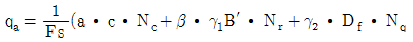
에 대한 설명으로 틀린 것은?- 계수 α, β를 형상계수라 하며 기초의 모양에 따라 결정된다.
- 기초의 깊이 가 클수록 극한지지력도 이와 더불어 커진다고 볼 수 있다.
- Nc, Nr, Nq는 지지력계수라 하는데 내부마찰각과 점착력에 의해서 정해진다.
- γ1, γ2는 흙의 단위 중량이며 지하수위 아래에서는 수중단위 중량을 써야 한다.
(정답률: 61%)
73. 자연상태의 모래지반을 다져 emin 에 이르도록 했다면 이 지반의 상대밀도는?
- 0%
- 50%
- 75%
- 100%
(정답률: 64%)
74. 어떤 지반의 미소한 흙요소에 최대 및 최소 주응력이 각각 1kg/cm2 및 0.6kg/cm2일 때, 최소주응력면과 60°를 이루는 면상의 전단응력은?
- 0.10kg/cm2
- 0.17kg/cm2
- 0.20kg/cm2
- 0.27kg/cm2
(정답률: 48%)
75. 수직방향의 투수계수가 4.51×10-8m/sec이고, 수평방향의 투수계수가 1.6×10-8m/sec 인 균질하고 비등방(非等方)인 흙댐의 유선망을 그린 결과 유로(流路)수가 4개이고 등수두선의 간격수가 18개 이었다. 단위길이(m)당 침투수량은? (단, 댐의 상하류의 수면의 차는 18m이다.)
- 1.1×10-7m3/sec
- 2.3×10-7m3/sec
- 2.3×10-8m3/sec
- 1.5×10-8m3/sec
(정답률: 45%)
76. 도로 연장 3km 건설 구간에서 7개 지점의 시료를 채취하여 다음과 같은 CBR을 구하였다. 이때의 설계 CBR은 얼마인가?
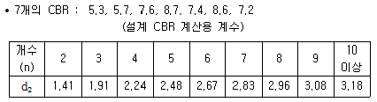
- 4
- 5
- 6
- 7
(정답률: 49%)
77. 다음 중 연약점토지반 개량공법이 아닌 것은?
- Preloading 공법
- Sand drain 공법
- Paper drain 공법
- Vibro floatation 공법
(정답률: 68%)
78. 간극비(e)와 간극률(n, %)의 관계를 옳게 나타낸 것은?
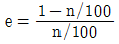
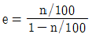
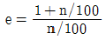
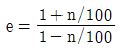
(정답률: 69%)
79. 분사현상에 대한 안전율이 2.5 이상이 되기 위해서는 Δh를 최대 얼마 이하로 하여야 하는가? (단, 간극률(n)=50%)
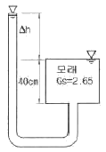
- 7.5cm
- 8.9cm
- 13.2cm
- 16.5cm
(정답률: 59%)
80. 옹벽배면의 지표면 경사가 수평이고, 옹벽배면 벽체의 기울기가 연직인 벽체에서 옹벽과 뒷채움 흙사이의 벽면마찰각(δ)을 무시할 경우, Rankine토압과 Coulomb토압의 크기를 비교하면?
- Rankine토압이 Coulomb토압보다 크다.
- Coulomb토압이 Rankine토압보다 크다.
- Rankine토압과 Coulomb토압의 크기는 항상 같다.
- 주동토압은 Rankine토압이 더 크고, 수동토압은 Coulomb토압이 더 크다.
(정답률: 58%)
숏크리트는 건식법과 습식법 두 가지 공법이 있으며, 거푸집이 필요하지 않아 경제적입니다. 또한 숏크리트는 특수한 재료를 사용하여 평활한 마무리면을 얻을 수 있습니다.